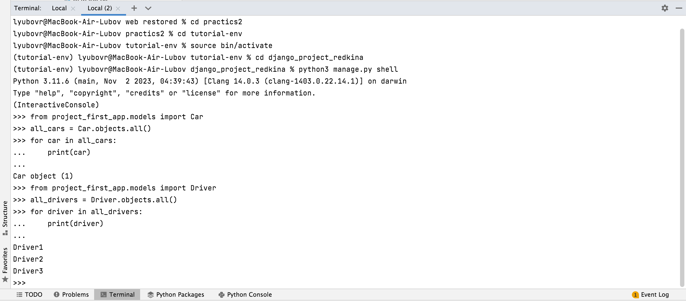
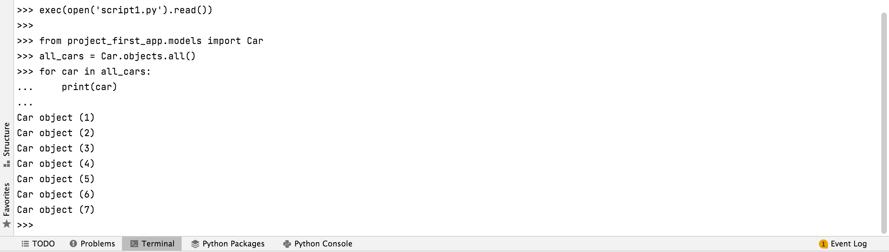
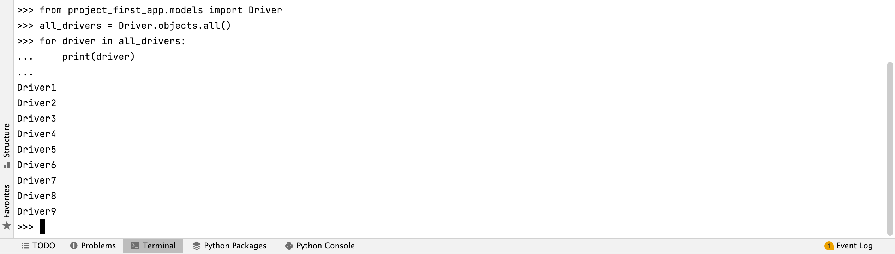

Практика 3.1
Задание 3.1.1
В первом задании первой практической работы нужно было написать запрос на создание 6 новых автовладельцев и 6 автомобилей, а также назначить каждому автовладельцу удостоверение и от 1 до 3 автомобилей.
Задание было выполнено либо в отдельном python-файле. Вот его код:
from project_first_app.models import Driver, Car, DriverDocs, Ownership
from django.utils import timezone
# Создание 6 новых водителей, начиная с 4
for i in range(4, 10):
driver = Driver.objects.create(
username=f"Driver{i}",
first_name=f"Driver{i}",
last_name=f"Lastname{i}",
birth_date=timezone.now().date(),
passport=f"Passport{i}",
address=f"Address{i}",
nationality=f"Nationality{i}"
)
# Установка пароля и почты
password = f"12345Qwerty"
driver.set_password(password)
driver.email = f"driver{i}@example.com"
# Сохранение изменений
driver.save()
# Создание 6 новых автомобилей
for i in range(2, 8):
car = Car.objects.create(
car_number=f"Car{i}",
brand=f"Brand{i}",
model=f"Model{i}",
color=f"Color{i}"
)
# Назначение удостоверения для каждого водителя
for driver in Driver.objects.all():
DriverDocs.objects.create(
driver_id=driver,
docs_number=f"DocsNumber{driver.id}",
type=f"Type{driver.id}",
date_from=timezone.now().date()
)
# Добавление связей Ownership между водителями и автомобилями
for i, (driver, car) in enumerate(zip(Driver.objects.all(), Car.objects.all())):
Ownership.objects.create(
driver_id=driver,
car_id=car,
date_from=timezone.now().date(),
date_to=None
)
Здесь можно увидеть выполнение запроса в консоли. Сначала состояние БД до выполнения запроса: 
А здесь БД после вызова скрипта:  